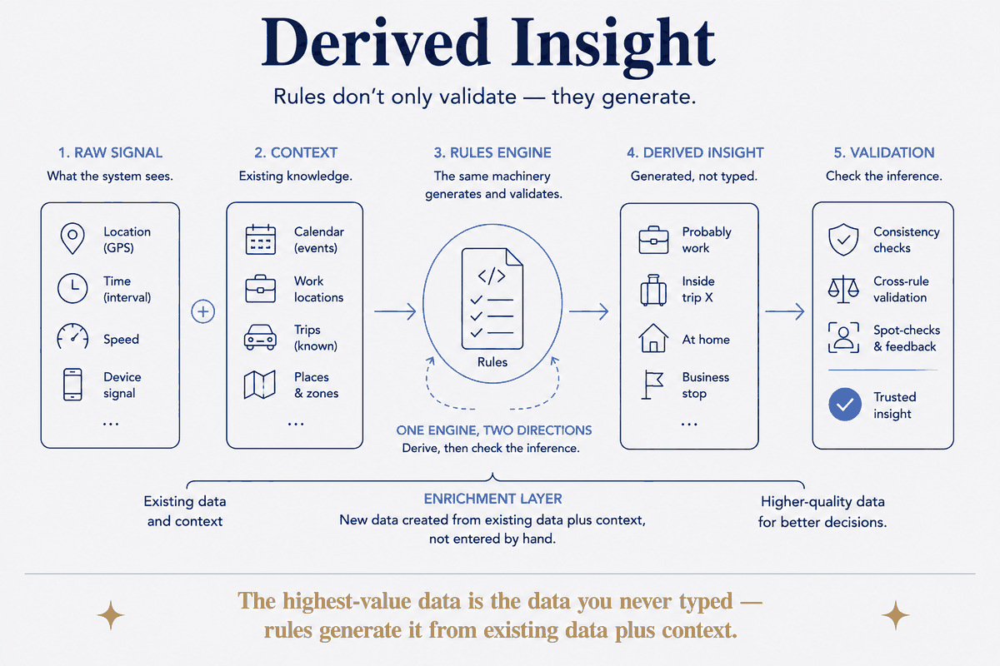

The highest-value data is the data you never typed — rules generate it from existing data plus context.

Rules don't only validate — they generate. When the system sees a location inside a time interval it infers 'probably work' or 'inside trip X'; raw signal becomes derived insight. The enrichment layer: new data created from existing data plus context, not entered by hand. Generation and validation are the same machinery pointed two ways — derive, then check the inference.
The highest-value data is the data you never typed. Not because typing is slow, but because you'd never have typed it at all: nobody logs "this was a work afternoon" or "this fortnight was a holiday". Those facts were always implied by data you already had — a coordinate, a duration, a calendar entry. They only needed a rule to notice.
That's the whole enrichment layer, and it's cheaper than it sounds: a coordinate plus an interval plus one line of rule produces a fact you'd never have entered. The honest caution: a derived fact is an inference, and inferences are wrong sometimes — which is why the same machinery that derives it should also check it, and flag rather than assert.